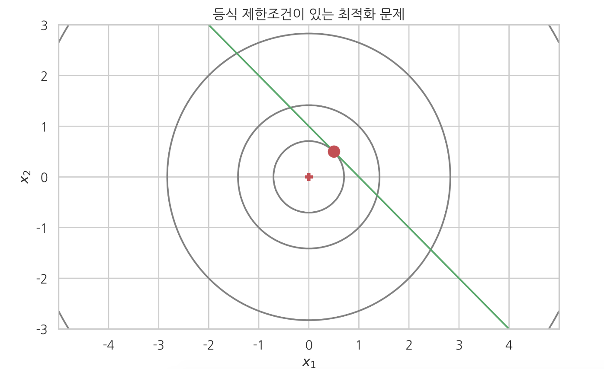
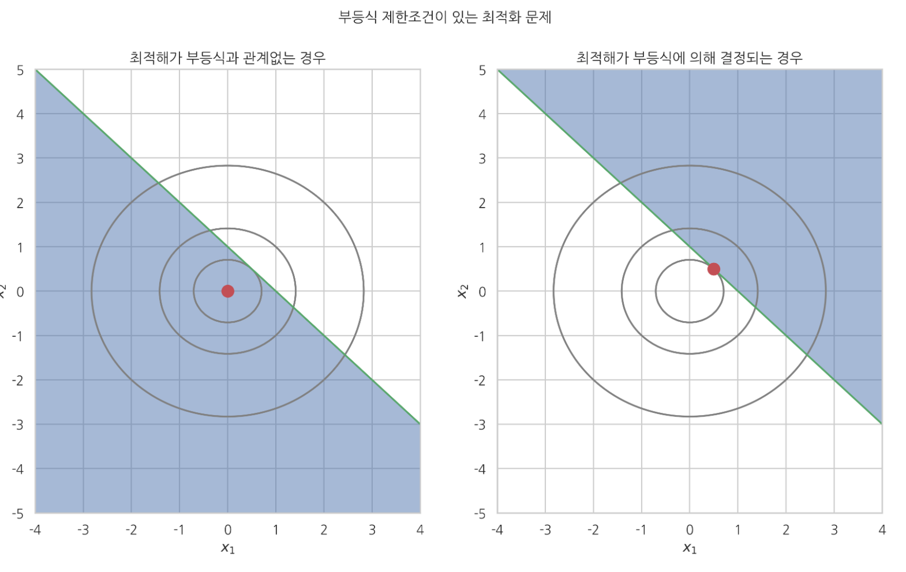
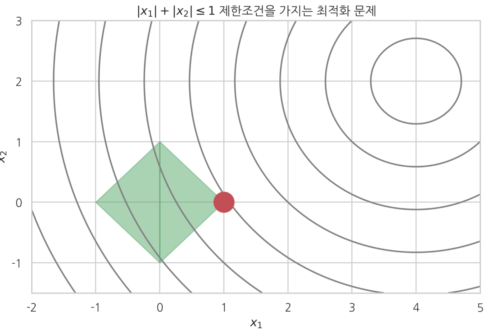

제한조건이 있는 최적화 문제
Summary
라그랑주 승수 방법은 원래의 목적함수 를 사용하지 않고 제한조건 등식에 라는 새로운 변수를 곱해서 더한 함수를 목적함수로 간주하여 최적화한다.
KKT(Karush-Kuhn-Tucker) 조건
모든 독립 변수 에 대한 미분값이 0이다. (제한조건 경우와 같으나 변수 에 대한 미분값만 0이어야 한다. 라그랑지 승수 에 대한 미분은 0이 아니어도 된다)
모든 라그랑지 승수 와 제한조건 부등식( 에 대한 미분값)의 곱이 0이다. (등식 제한조건의 경우처럼 라그랑지 승수 에대한 미분값이 0이어도 되고 아니면 라그랑지 승수 값 자체가 0이 되어도 된다. )
- 라그랑지 승수는 음수가 아니어야 한다. (KKT 조건이 실제로 부등식 제한조건이 있는 최적화 문제와 같은 문제임을 보장(striong duality) 하기 위한 조건이다.)
만약 이면 이 조건은 부등식 제한조건이 아닌 등식 제한조건이 된다. 그리고 등식 제한조건에서 말한 바와 같이 (이 제한조건이 있으나 없으나 해가 바뀌지 않는 특수한 경우를 제외하면) 라그랑주 승수는 0이 아닌 값을 가진다.
반대로 이면 해가 가 표현하는 곡선으로부터 떨어져 있기 때문에 부등식 제한조건이 아무런 의미가 없어진다. 즉, 제한조건이 있을 때와 없을 때의 해가 같다. 따라서 목적함수 ℎ(𝑥,𝜆)는 항이 있으나 없으나 상관없이 같은 해를 가진다. 따라서 이 된다.
등식 제한조건이 있는 최적화 문제
현실의 최적화 문제에서는 여러가지 제한조건이 있는 최적화(constrained optimization) 문제가 많다. 가장 간단한 경우는 다음과 같이 등식 제한조건이 있는 경우이다.
식 4.2.1만 보면 단순히 목적함수 를 가장 작게하는 차원 벡터 값을 찾는 문제이다. 하지만 식 4.2.2에 있는 개의 등식 제한 조건이 있으면 개 연립 방정식을 동시에 모두 만족시키면서 목적함수 를 가장 작게하는 값을 찾아야 한다.
예제
목적함수 와 등식 제한조건 이 다음과 같은 경우 이 문제는 다음 그림처럼 으로 정의되는 직선상에서 가장 값이 작아지는 점 를 찾는 문제가 된다.

라그랑주 승수법
등식 제한조건이 있는 최적화 문제는 라그랑주 승수법(Lagrange multiplier) 을 사용하여 최적화 할 수 있다.
라그랑주 승수 방법에서는 목적함수를 원래의 목적함수 를 사용하지 않는다. 대신 제한조건 등식에 라는 새로운 변수를 곱해서 더한 함수를 목적함수로 간주하여 최적화한다.
이 때 제한조건 등식 하나마다 새로운 를 추가해주어야 한다. 만약 제한조건이 개 이면 개의 변수가 새로 생긴 것과 같다. 이렇게 확장된 목적함수 는 입력변수가 더 늘어났기 때문에 그레디언트 벡터를 영벡터로 만드는 최적화 필요 조건이 다음처럼 개가 된다.
개의 연립 방정식을 풀면 개의 미지수 를 구할 수 있다. 구한 결과에서 가 우리가 찾는 최소값 이다. 나머지 라그랑주 승수값은 필요 없다.
예제
라그랑지 승수법을 적용하여 그레디언트 벡터가 영벡터인 위치를 구한다.
Scipy를 사용하여 등식 제한조건이 있는 최적화 문제 계산하기
SciPy의 optimize 서브패키지는 제한조건이 있는 최적화 문제를 풀기위한 fmin_slsqp명령을 제공한다.
fmin_slsqp(func_objective, x0, eqcons=[func_constraint1, func_constraint2])
fmin_slsqp 명령은 목적함수와 초기값, 그리고 제한조건 함수의 리스트를 인수로 받는다. 목적함수는 배열인 인수를 받도록 구현되어야 하고 제한조건 함수의 경우에는 항상 eqcons인수를 명시해야 한다.
def f1array(x):
return x[0] ** 2 + x[1] ** 2
def eq_constraint(x):
return x[0] + x[1] - 1
sp.optimize.fmin_slsqp(f1array, np.array([1, 1]), eqcons=[eq_constraint])
라그랑주 승수의 의미
만약 최적화 문제에서 등식 제한조건 이 있는가 없는가에 따라 해의 값이 달라진다면 이 등식 제한조건에 대응하는 라그랑주 승수 는 0이 아닌 값이어야 한다.
일 때만 원래의 문제와 제한조건이 있는 문제의 최적화 조건이 같아지므로 최적화 해의 위치도 같게 나오기 때문이다.
예제
목적함수가 인 최소화 문제의 답은 이다. 여기에 다음 최적화 조건이이 있다고 하자. 라그랑주 승수법에서 새로운 목적함수 최적화 조건은 이를 풀면 으로 제한조건이 있으나 없으나 해는 같고 라그랑지 승수가 0이다.
부등식(inequality) 제한조건이 있는 최적화 문제
만약 부등식이 과 같다면 양변에 -1을 곱하여 부등호의 방향을 바꾼다.
이렇게 부등식 제한조건이 있는 최적화 문제도 라그랑지 승수 방법과 목적함수를 다음처럼 바꾸어 푼다.
최적화 해의 필요조건은 방정식 제한조건이 있는 최적화 문제와 다르게 KKT(Karush-Kuhn-Tucker) 조건 이라고 하며 다음처럼 3개의 조건으로 이루어진다.
모든 독립 변수 에 대한 미분값이 0이다. (제한조건 경우와 같으나 변수 에 대한 미분값만 0이어야 한다. 라그랑지 승수 에 대한 미분은 0이 아니어도 된다)
모든 라그랑지 승수 와 제한조건 부등식( 에 대한 미분값)의 곱이 0이다. (등식 제한조건의 경우처럼 라그랑지 승수 에대한 미분값이 0이어도 되고 아니면 라그랑지 승수 값 자체가 0이 되어도 된다. )
라그랑지 승수는 음수가 아니어야 한다. (KKT 조건이 실제로 부등식 제한조건이 있는 최적화 문제와 같은 문제임을 보장(striong duality) 하기 위한 조건이다.)
예제로 부등식 제한조건을 가지는 최적화의 예를 풀어보자.
1)목적함수
2)제한조건1.
제한조건1은 부등식 제한조건이 있기는 하지만 원래의 최적화 문제의 해가 부등식 제한조건이 제시하는 영역안에 있기 때문에 최적점의 위치가 달라지지 않는다.
3)제한조건2.
제한조건2은 원래의 최적화 문제의 해가 부등식 제한조건이 제시하는 영역 바깥에 있기 때문에 최적점의 위치가 달라졌다. 하지만 최적점의 위치가 영역의 경계선(boundary line)에 있다는 점에 주의해야한다.

부등식 제한조건이 있는 최적화 문제를 풀면 그 제한조건은 다음 두 가지 경우의 하나가 되어버린다.
- 최적화 결과에 전혀 영향을 주지 않는 쓸모없는 제한조건
- 최적화 결과에 영향을 주는 등식(equality)인 제한조건
어느 경우이든 부등식 제한조건 문제로 시작했지만 결과는 제한조건이 없거나 등식 제한조건 문제를 푸는 것과 같아진다. KKT조건 중 두번째 조건이 뜻하는 바는 다음과 같다.
다음 식에서 는 KKT 조건을 풀어서 구한 최적해의 값이다.
만약 이면 이 조건은 부등식 제한조건이 아닌 등식 제한조건이 된다. 그리고 등식 제한조건에서 말한 바와 같이 (이 제한조건이 있으나 없으나 해가 바뀌지 않는 특수한 경우를 제외하면) 라그랑주 승수는 0이 아닌 값을 가진다.
반대로 이면 해가 가 표현하는 곡선으로부터 떨어져 있기 때문에 부등식 제한조건이 아무런 의미가 없어진다. 즉, 제한조건이 있을 때와 없을 때의 해가 같다. 따라서 목적함수 ℎ(𝑥,𝜆)는 항이 있으나 없으나 상관없이 같은 해를 가진다. 따라서 이 된다.
복수의 부등식 제한조건이 있는 또다른 2차원 최적화 문제의 예시를 살펴보자.
4개의 제한조건은 다음과 같은 하나의 부등식으로 나타낼 수도 있다.

SciPy를 사용하여 부등식 제한조건이 있는 최적화 문제 계산하기
fmin_slsqp 명령은 이렇게 부등식 제한조건이 있는 경우에도 사용할 수 있다. 제한조건 인수의 이름이 ieqcons로 달라졌다.
fmin_slsqp(func_objective, x0, ieqcons=[func_constraint1, func_constraint2])
단 ieqcons 인수에 들어가는 부등호의 부호는 우리가 지금까지 사용한 방식과 달리 0 또는 양수이어야 한다.
사실 fmin_slsqp 명령은 등식 제한조건과 부등식 제한조건을 동시에 사용할 수 있다.
def f2(x):
return np.sqrt((x[0] - 4) ** 2 + (x[1] - 2) ** 2)
# 제한 조건 상수
k = 1
def ieq_constraint(x):
return np.atleast_1d(k - np.sum(np.abs(x)))
sp.optimize.fmin_slsqp(f2, np.array([0, 0]), ieqcons=[ieq_constraint])